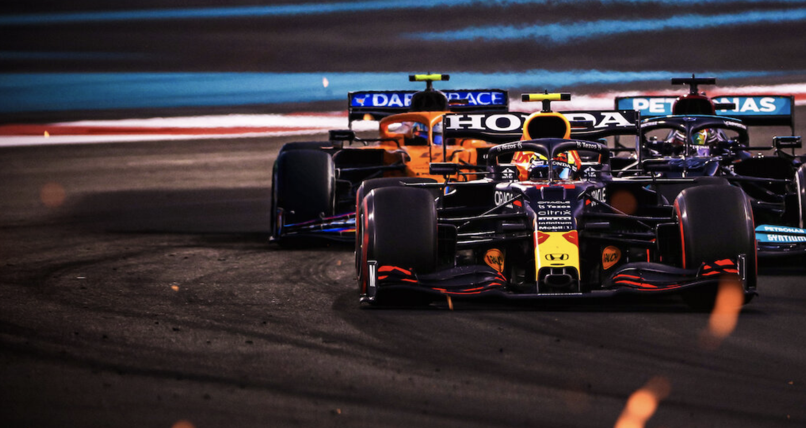
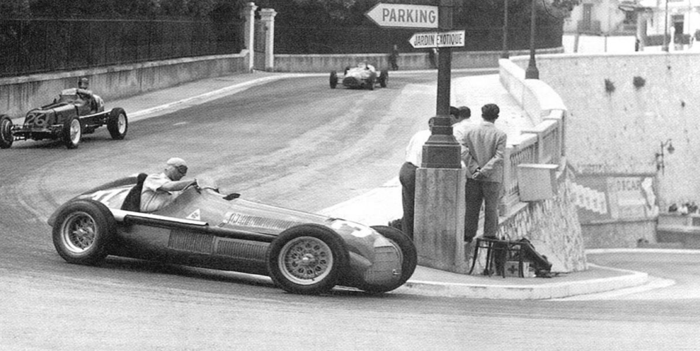
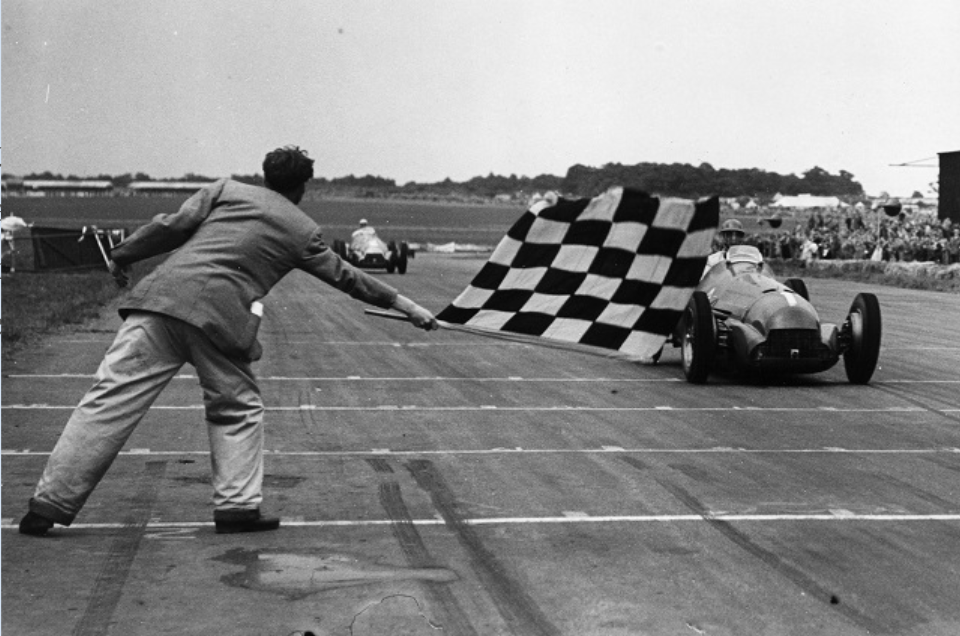
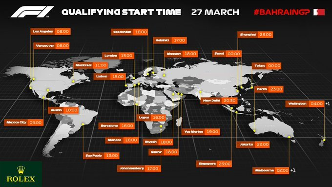
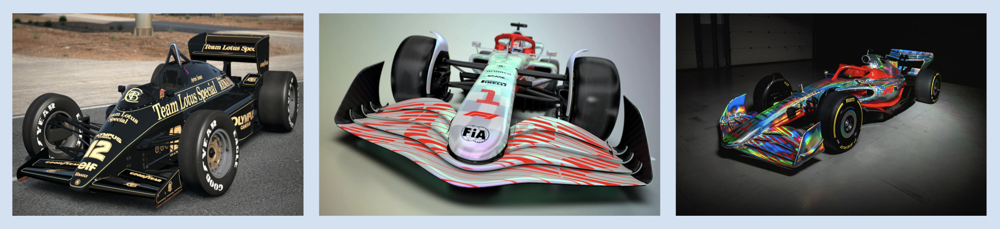

Formula 1
Colegio Francés Hidalgo, Alex y José Joel

Carrera de la F1
La fórmula 1 es un conjunto de carros y pilotos dando vueltas en una pista
Contenidos
Historia
El inicio de la Fórmula 1 moderna se remonta al año 1950,en el que participaron escuderías como Ferrari, Alfa Romeo y Maserati. Algunas fueron reemplazadas por otras nuevas como Mclaren,Williams, Red Bull y otras que volvieron como Mercedes que se han alzado varias veces con el campeonato mundial de constructores.


Primeras fotografías de la F1
Ubicación

Ubicaciones de pistas
Se practica el gran premio de: España, Russia, México, entre otros.
Reglamento
Las nuevas reglas de la F1:
- Se pasa de 10 a 12 equipos y de 17 a 19 grandes premios: vuelve Canadá y se estrena Korea.
- El peso mínimo del coche, piloto incluido, pasa de 605 a 620 kilos.
- Los neumáticos delanteros son más estrechos.
- El número de juegos de neumáticos para cada piloto pasa de 14 a 11 en cada Gran Premio. Tres deben ser obligatoriamente utilizados en las dos sesiones de entrenamientos libres de los viernes. Es decir, tienen ocho para sábado y domingo.
- Se prohíben el Kers (sistema de aceleración súbita que utilizaba la energía de frenada) y el tapacubos que cubría la rueda.
- La clasificación de los sábados cambia: siete monoplazas serán eliminados en la primera ronda (Q1), otros siete en la segunda (Q2) y quedarán diez pilotos para la última (Q3), en la que se decidirá la pole.
- Las tandas de clasificación se harán con el mínimo de gasolina necesario y los diez primeros de la parrilla tienen que tomar la salida del Gran Premio con los mismos neumáticos empleados en la Q3.
- Todos los coches salen con el depósito lleno, pues no se puede repostar gasolina durante las carreras.
- Nuevo sistema de puntuación.
Ejemplos de carros:

Carros de la F1